O que aprendi colocando uma chácara de temporada para funcionar: como fotografar, gravar, descrever e organizar o imóvel para ele ser escolhido pelo hóspede certo.
Este guia nasceu de uma chácara de verdade, o Recanto, que precisava sair do vazio. Nada aqui depende de equipamento caro, agência ou sorte. Depende de direção.
O que é o Método VIP
Vídeo: o que encanta antes da reserva e orienta depois dela.
Imagem: fotos com direção, sequência e edição honesta.
Posicionamento: público certo, descrição clara e operação que sustenta a nota 5.
A regra que vale para tudo
Aqui a gente melhora a apresentação. Não inventa realidade.
Clareza, organização e luz: sim. Distorcer tamanho, esconder defeito ou prometer o que não existe: não.
Reserva baseada em engano vira cancelamento. Reserva baseada em clareza vira avaliação 5 estrelas.
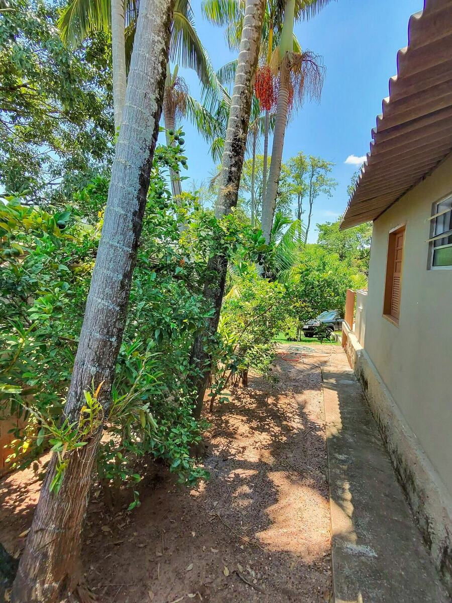
Trilha até o pomar
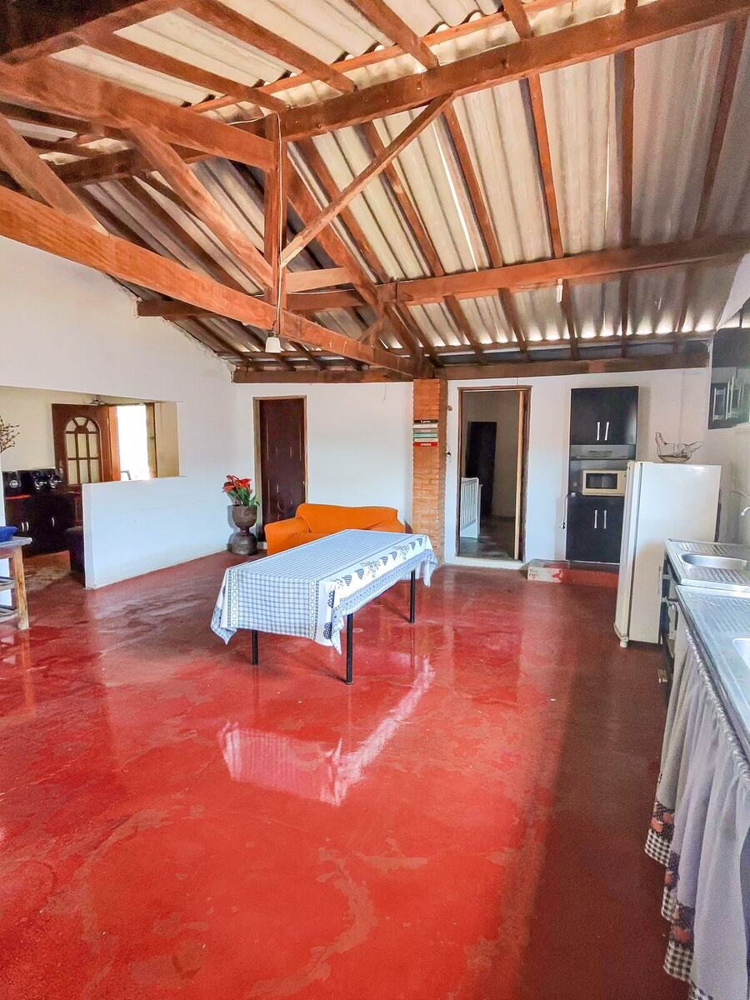
Área coberta integrada
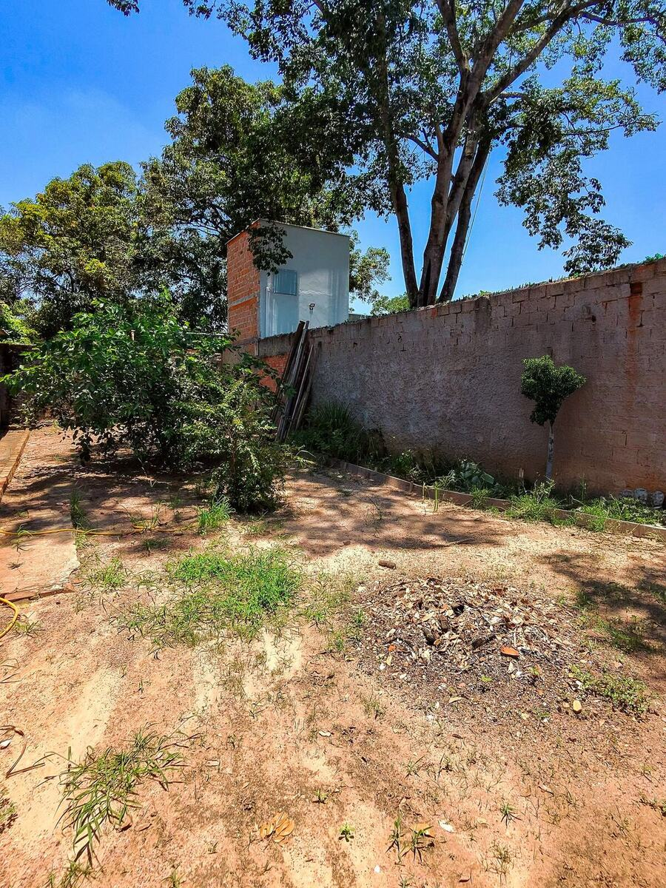
O terreno como ele é
Tarefa de 1 minuto: abra um anúncio qualquer, seu ou de um lugar que você gostaria de visitar, e anote o que dá vontade de clicar e o que dá vontade de sair. Hoje começa a construção do seu olhar.
Nove módulos na ordem em que o trabalho acontece: pensar como ativo, fotografar, escolher, editar, gravar, receber, manter e descrever. Cada um termina com uma tarefa prática.
Imóvel parado não é neutro: tem condomínio, IPTU, manutenção, energia e limpeza todo mês. Quando você trata o imóvel como ativo, muda a foto, a descrição e a estrutura. E ele começa a trabalhar.
O caso do Recanto
A chácara tinha custo fixo de cerca de R$ 3.000 por mês. Depois de refazer imagem e posicionamento, a primeira semana no ar rendeu R$ 2.400.
O terreno era o mesmo, a piscina era a mesma. Mudou a forma de mostrar, de explicar e de transmitir confiança: quantas pessoas cabem, que tipo de evento é permitido, o que está incluso, as regras e como funciona o check-in.
Resultado de um caso real. Cada imóvel tem a sua realidade de região, temporada e preço.
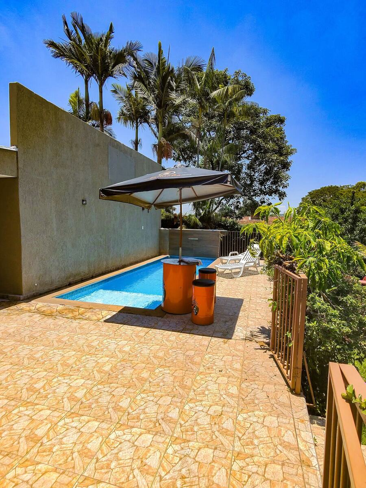
Recanto: a piscina
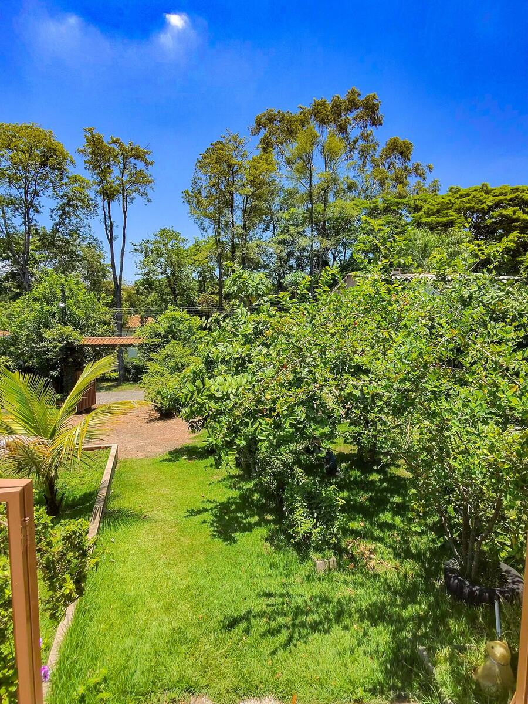
O pomar e a natureza
Cada imóvel conversa com um público
Imóvel
Público natural
O que a imagem precisa mostrar
Casa com piscina e gourmet
Famílias, grupos, confraternização leve
Piscina, churrasqueira, mesa para todos
Loft urbano
Casais, trabalho remoto, estadia curta
Mesa de trabalho, Wi-Fi, localização
Chácara
Descanso, natureza, grupo pequeno
Verde, silêncio, varanda, acesso
Você não quer qualquer hóspede. Quer o hóspede certo para o seu imóvel.
ExercícioComplete a frase: "Meu imóvel é escolhido por ____." Sem generalizar. Clareza de público gera clareza de comunicação.
Faturamento não é lucro. Mas a conta precisa fechar.
Antes de mexer em foto, olhe o imóvel como um pequeno negócio: quanto ele custa parado e quanto pode gerar quando é escolhido.
Exemplo de conta
Item
Por mês
Custo de manutenção
R$ 1.500
Faturamento com temporada
R$ 7.000
Um imóvel com custo de manutenção de cerca de R$ 1.500 por mês pode faturar em torno de R$ 7.000 por mês com aluguel por temporada, com pequenos ajustes de imagem, descrição e operação.
É faturamento (ganho bruto), não lucro. Exemplo de referência: o resultado depende da região, da temporada, da diária e da ocupação.
O que sai do faturamento
Taxa de serviço da plataforma
Limpeza e lavanderia a cada saída
Água, luz, gás e internet
Piscina, jardim e manutenção
Reposição de enxoval e utensílios
Impostos sobre a renda do aluguel
A fórmula que você vai acompanhar
Faturamento = diária média × noites ocupadas
Para aumentar o faturamento, você mexe em uma das duas coisas: ocupar mais noites (ser escolhido mais vezes) ou sustentar uma diária melhor (ser percebido como mais valioso). Imagem, vídeo e descrição atuam nas duas.
ExercícioAnote o custo mensal do seu imóvel parado e a diária média da sua região. Quantas noites por mês pagam o custo? Esse é o seu ponto de equilíbrio.
Fotografei o Recanto inteiro com os óculos Ray-Ban Meta, porque era o que eu tinha. O resultado foi decidido pelo olhar e pelo tratamento depois, não pelo equipamento.
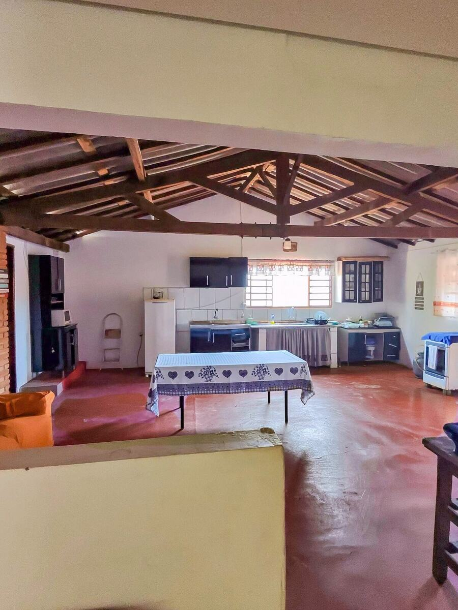
Canto A: profundidadeCanto B: o outro lado
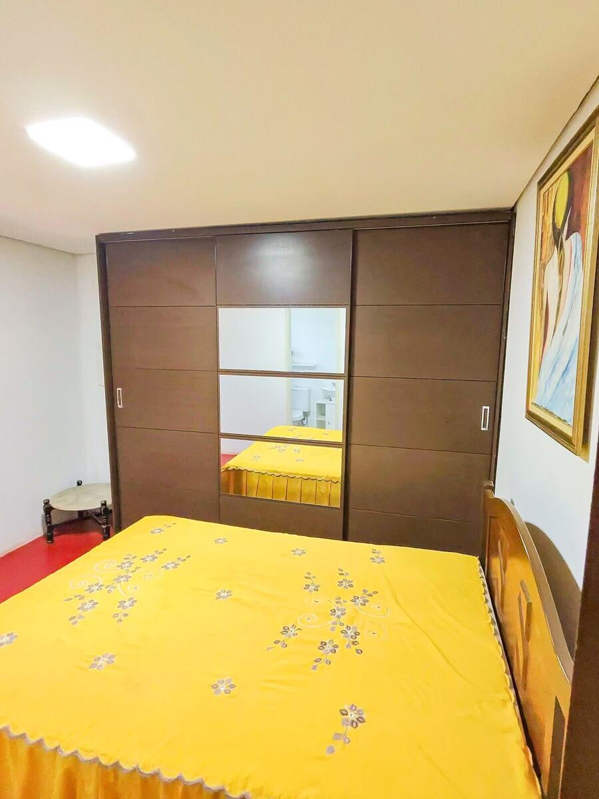
Detalhe de desejo
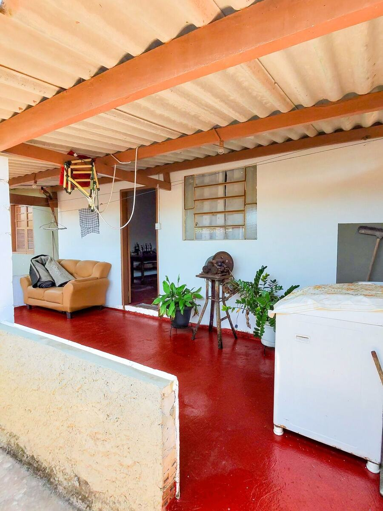
Contexto e circulação
O método dos 4 cliques por cômodo
Canto A mostrando porta e janela.
Canto oposto, para criar profundidade.
Detalhe de desejo: colcha bem feita, café servido, toalha dobrada.
Contexto: circulação e integração entre os ambientes.
Sempre com as linhas retas. Quando a vertical cai, o cérebro lê instabilidade.
Equipamento, de forma honesta
Celular: resolve a maioria dos casos.
Óculos Meta: ótimos para bastidor e ponto de vista; trate como complemento, porque o formato é vertical e o campo é estreito.
Câmera profissional: para imóvel premium ou portfólio.
Com luz natural, organização e ângulo, o celular dá conta.
Fotografe sobrando: no Recanto foram entre 50 e 80 fotos para usar 28. Fotografia de imóvel não é acertar de primeira, é aumentar a chance de acerto.
Entrega do móduloChecklist de 4 cliques por cômodo e a escolha da foto principal (o "hero shot"): a imagem que resume por que alguém clicaria no seu anúncio.
No digital você não vende metros quadrados, vende leitura do espaço. E ela depende de três coisas: linhas retas, profundidade visível e referências como porta e janela.
O caso da Barra da Tijuca
Um imóvel no Rio, bem cuidado e iluminado, foi entregue em fotos verticais. O cliente olhou e disse que não sentia amplitude.
Refizemos na horizontal: mesma sala, mesma luz, com porta e janela no quadro. A sensação mudou por completo. O imóvel não cresceu; a percepção cresceu.
Vertical aproxima. Horizontal amplia. Use o vertical para Reels e Stories, e o horizontal para o anúncio.
No mesmo cômodo, o enquadramento vertical corta a porta e a janela, que são as referências de escala.
Cinco erros que acabam hoje
Erro
Por que custa caro
Correção na hora
Foto escura
Transmite abandono, não aconchego
Abra cortinas, acenda as luzes, volte no horário certo
Linha torta
Passa sensação de instabilidade
Endireite na captura, com a grade da câmera
Sem porta e janela
Perde a referência de escala
Mude para o canto oposto
Abrir com detalhe
Detalhe é complemento, não introdução
Primeiro o ambiente, depois o detalhe
Bagunça visual
Reduz a percepção de padrão
Tire cabos, baldes e itens pessoais
As 5 primeiras fotos: são as que mais pesam no anúncio, e a primeira é a que aparece na busca. Elas precisam responder: por que eu clico, o que é esse lugar, onde eu durmo, como é a área social e qual é o diferencial.
Amplitude, sim. Distorção, não. Lente ultra-angular exagerada quebra a expectativa, e expectativa quebrada vira avaliação baixa.
Nas plataformas, as primeiras fotos carregam o anúncio, e a capa é a que aparece na busca. Escolha a ordem com intenção.
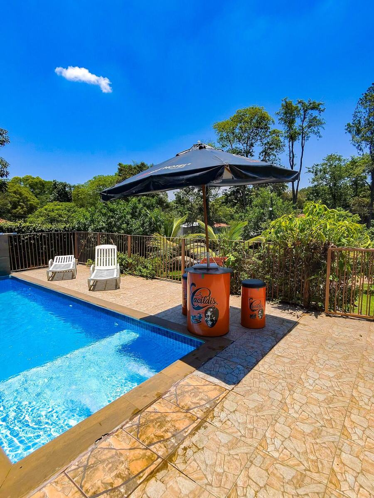
1 · Capa: o diferencial (piscina, vista, verde)
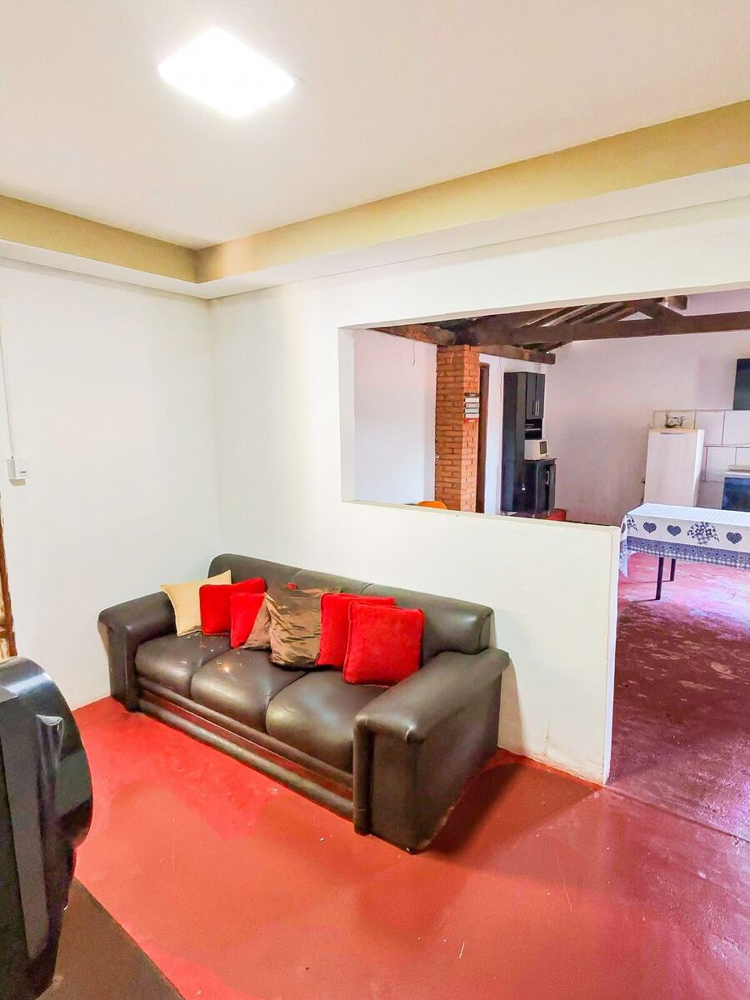
2 · Área social3 · Quarto principal
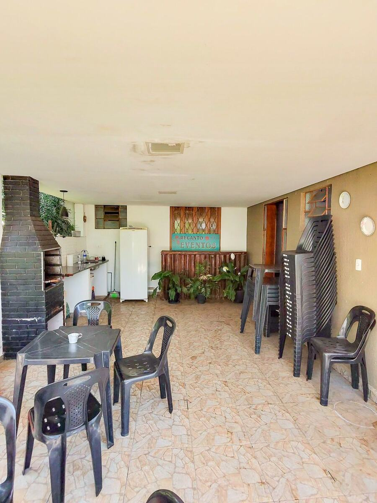
4 · Gourmet / cozinha5 · O segundo diferencial
Posição
Pergunta que a foto responde
1 · Capa
Por que eu clicaria neste anúncio?
2 · Área social
O que é esse lugar e como se vive nele?
3 · Quarto
Onde eu durmo, e é confortável?
4 · Gourmet
Onde a gente se reúne?
5 · Diferencial
Por que este e não o vizinho?
Depois das 5: organize o restante por cômodo, na ordem da visita. Fachada e acesso, áreas sociais, quartos, banheiros, área externa e entorno. Use as legendas das fotos para avisar peculiaridades.
Você olha a foto e pensa "tá boa". O hóspede olha e sente "não entendi o espaço". A IA serve de segundo olhar: aponta enquadramento, linhas, profundidade e o que está sobrando no quadro.
Prompt de análise · copie e cole com a fotoAnalise esta foto de um cômodo para anúncio de aluguel por temporada. 1) Liste 3 pontos fortes e 3 pontos fracos. 2) Diga exatamente onde eu deveria ficar para refazer a foto (ângulo e canto). 3) Sugira um corte ideal e ajustes de luz e cor naturais, sem filtro pesado. 4) Aponte distrações, como cabos e objetos, que devo remover.
O que a análise deve checar
Linhas verticais retas.
Câmera entre 1,10 m e 1,30 m de altura.
Luz natural dominante, sem mistura de luz fria e quente.
Pelo menos dois planos do ambiente (profundidade).
Nada que quebre a leitura: cabos, objetos no chão.
Use também para
Comparar duas fotos e escolher a que dá mais amplitude.
Decidir a ordem das 5 primeiras fotos.
Conferir se a edição ficou natural ou exagerada.
A IA recomenda. Você decide. Ela não conhece o seu público, o seu preço nem o seu diferencial.
Sala: dois planos e janela
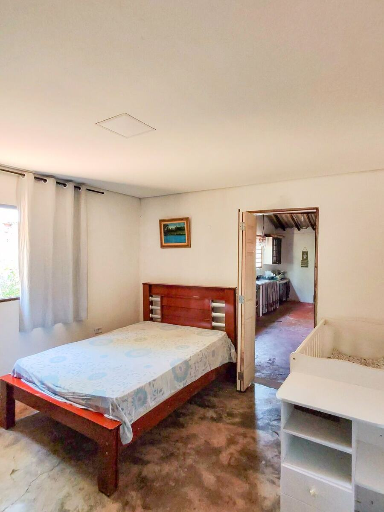
Quarto: porta como referênciaGourmet: profundidade
TarefaEnvie 1 foto para análise e refaça seguindo 2 recomendações. Compare as duas versões lado a lado.
Melhorar clareza, sim. Criar ilusão, não. As plataformas orientam a não exagerar na edição e a não usar edição, inclusive com IA, para esconder danos ou mostrar o que não existe.
Nível 1 · no celular, 1 a 2 minutos por foto
Endireitar. Linha torta parece descuido.
Clarear com equilíbrio. Luz natural tem de parecer natural.
Temperatura realista. Nem azul hospital, nem amarelo exagerado.
Contraste leve. Só para definir formas.
Corte. Tire distrações das bordas.
Nível 2 · profissional
Remover um cabo que já vai ser retirado.
Corrigir perspectiva que caiu levemente.
Ajustar uma pequena distração visual.
Equilibrar céu e janela estourada.
Não pode: apagar rachadura ou infiltração, inventar vista, mudar acabamento.
Se o hóspede chegar e disser "isso não estava na foto", a edição errou.
Quando vale terceirizar
Imóvel de padrão mais alto, muitas fotos para tratar ou falta de tempo. Nesses casos, o tratamento profissional e o vídeo feito a partir das suas fotos ampliam a percepção sem exigir nova sessão.
Vídeo Imóvel: você manda as fotos que já tem, a gente faz a curadoria, trata luz e cor e entrega o vídeo pronto para redes e portais. videoimovel.com.br
O vídeo tem dois papéis: encantar quem ainda não conhece o imóvel, nas redes e no Marketplace, e orientar quem já reservou. Você não precisa de dez vídeos. Precisa de três bem feitos.
Vídeo
Para quê
Como fazer
1 · Tour do desejo
Atrair nas redes
30 a 45 s. Gancho nos 3 primeiros segundos com o diferencial (piscina, varanda, vista). Movimento lento. Termina no conforto: quarto pronto, mesa posta.
2 · Utilitário
Evitar dúvida e estresse
Curto e direto: portão, registro, cascata, aquecimento. Sem narrativa, só clareza.
3 · Entorno
Transmitir segurança
Caminho de chegada, mercado, comércio, acesso. Responde "será que é tranquilo?" sem precisar falar.
Entorno de cima: a represa
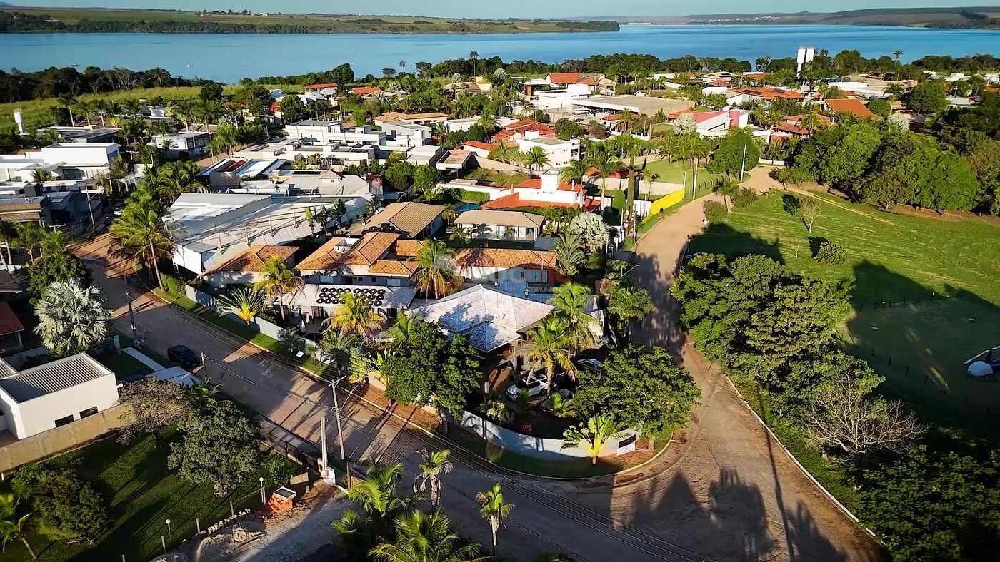
O condomínio e as ruasO pôr do sol na água
Imagens aéreas: Condomínio Ondas Grandes, Santa Maria da Serra-SP · captação Vídeo Imóvel.
Respeite a plataforma: antes da reserva, a conversa e o pagamento ficam dentro do Airbnb, sem levar o hóspede para fora. Depois da reserva confirmada, dá para enviar vídeos e links (como uma pasta no Drive) pelas mensagens. Confira sempre as regras atuais na central de ajuda da plataforma.
Prompt de roteiroCrie um roteiro de 30 segundos para um vídeo desta propriedade (cômodos: ___), começando pelo diferencial e terminando no conforto, com sensação de fim de semana perfeito e sem exageros.
Você não vai responder mais rápido. Vai responder menos, porque vai antecipar. A maior parte das perguntas do hóspede é operacional: como abre o portão, o registro está fechado, como liga a cascata.
A pasta "Boas-vindas + Orientações" do Recanto
Chegada e acessoPiscina e cascataÁrea gourmetBanheiros e registros
Na pasta real do Recanto: chegada pela estrada de terra, portão e chaves, cascata, registros de água, comércio local, vista aérea da região, luzes externas e TV. Um vídeo curto para cada dúvida que se repete.
Estrutura da pasta
Chegada: caminho final e ponto de entrada.
Portão e chave: abrir, estacionar, trancar.
Água e registros: onde ficam e o que fazer.
Piscina e gourmet: uso, horário, cuidados.
Regras e FAQ: silêncio, pet, capacidade, lixo, emergência.
O caso do registro fechado
O hóspede achou que a água tinha acabado. Situação de crise.
Mas existia um vídeo de 15 segundos: "se faltar água, verifique este registro aqui". Enviado, problema resolvido. Sem deslocamento, sem estresse, sem avaliação negativa.
Prompt de mensagem pós-reservaCrie uma mensagem acolhedora para enviar após a confirmação da reserva, com as instruções de chegada e o link para a pasta de vídeos de orientação.
TarefaCrie a pasta e grave 3 vídeos: chegada, portão ou porta de entrada, e o uso de algum equipamento que sempre gera dúvida.
Salve como respostas rápidas na plataforma e troque o que está entre colchetes. Envie no momento certo e as perguntas diminuem.
1 · Assim que a reserva for confirmadaOi, [nome]! Que bom ter você no [nome do imóvel]. Separei uma pasta com vídeos curtos de chegada, portão e orientações da casa: [link da pasta]. Qualquer dúvida, é só chamar por aqui.
2 · Na véspera do check-inOi, [nome]! Amanhã o check-in é a partir das [hora]. O caminho final está no vídeo "Chegando" da pasta. A chave fica [local]. Boa viagem!
3 · No primeiro diaOi, [nome]! Chegou tudo certo? Lembrando: a cascata liga [onde] e os registros de água estão no vídeo 5 da pasta. Aproveite!
4 · Na véspera do check-outOi, [nome]! O check-out é até as [hora]. Pedimos só para [deixar a louça lavada / fechar o portão / deixar a chave em tal lugar]. Obrigado pelo cuidado com a casa.
5 · Depois da saídaOi, [nome]! Obrigado pela estadia. Se gostou, sua avaliação ajuda muito outras famílias a encontrarem o [nome do imóvel]. Volte sempre!
Antes da reserva, responda dentro da plataforma e sem pedir telefone ou pagamento por fora. As mensagens acima são para depois da reserva confirmada.
Imóvel pode ser renda ou prisão. A diferença é processo.
Gestão não é apagar incêndio, é evitar incêndio. Chave trava, disjuntor desarma, pelo de cachorro vai parar no filtro da piscina. Checklist não é burocracia: é liberdade.
Pré-check-in (antes de cada hóspede)
Testar chuveiros e pressão de água
Conferir os registros
Testar ar-condicionado e ventiladores
Verificar o Wi-Fi
Conferir o enxoval
Checar o gás
Testar a iluminação
Conferir as fechaduras
Avaliar a limpeza da piscina
Registrar fotos internas
Pós-check-out (depois da saída)
Avaliar danos
Conferir utensílios
Checar o lixo
Avaliar o estado do enxoval
Testar equipamentos
Conferir o filtro da piscina
Checar consumo fora do normal
Registrar fotos
Atualizar o estoque
Anotar pendências
O "dia do imóvel"
Um dia fixo na semana sem hóspede, só para revisão: casa de máquinas, registros, pintura e desgaste, estoque de manutenção. No Recanto, é a quarta-feira.
Manutenção preventiva evita a emergência de sábado à noite.
Pet: regra clara
Se aceita: defina porte, taxa, área permitida e limpeza extra, inclusive do filtro da piscina.
Se não aceita: escreva no anúncio. Ambiguidade gera conflito; clareza gera avaliação alta.
Prompt de checklist personalizadoCrie um checklist pré-check-in e pós-check-out com 10 itens cada para um imóvel de temporada com estes ambientes e equipamentos: ___. Inclua itens de manutenção preventiva.
Descrição fraca gera curiosos. Descrição forte filtra.
"Tem Wi-Fi?", "Pode fazer festa?", "Quantas pessoas cabem mesmo?" Essas perguntas não são culpa do hóspede: são sintoma de descrição incompleta.
Bloco
O que escrever
1 · Abertura
Duas linhas de ambientação, sem exagero, para a pessoa se imaginar ali.
2 · Resumo
Capacidade, quartos, camas, banheiros.
3 · Comodidades
Tudo marcado também nos campos da plataforma: quem filtra por "piscina" só encontra quem marcou.
4 · Limites
O que não tem: TV, Wi-Fi, som alto, visitas extras.
5 · Regras
Silêncio, pet, eventos, lixo, câmeras externas se houver.
6 · Check-in e check-out
Horários, forma de acesso, se alguém recepciona.
7 · Região
Mercado, farmácia, acesso: segurança, não roteiro turístico.
8 · FAQ
As 5 perguntas que sempre aparecem, já respondidas.
Dizer o que o imóvel não tem não afasta o hóspede certo. Afasta o conflito.
Prompt de descrição em 8 blocosCrie uma descrição para um imóvel de temporada com estas características: ___. Siga 8 blocos: abertura, resumo objetivo, comodidades, limites, regras, check-in, região e FAQ. Seja claro, direto e sem exageros.
Prompt de revisãoAnalise esta descrição e diga quais dúvidas ainda podem surgir e como eliminá-las.
Exemplo para uma chácara com piscina. Troque os colchetes pelos dados reais do seu imóvel e apague o que não se aplica.
Abertura: Piscina, área gourmet e muito verde para desacelerar a poucos minutos da cidade. Um lugar para reunir a família e ouvir os pássaros pela manhã.
Resumo: Acomoda até [__] pessoas · [__] quartos · [__] camas · [__] banheiros.
Comodidades: piscina com cascata, churrasqueira, área coberta com mesas, cozinha equipada, pomar, estacionamento para [__] carros, [Wi-Fi: sim/não].
O que não tem: [TV / ar-condicionado / roupa de cama, se for o caso]. Não é permitido som alto após as [__] h.
Regras: [aceita / não aceita] pet · eventos [permitidos com até __ pessoas / não permitidos] · visitantes extras [regra] · [câmeras externas, se houver].
Check-in e check-out: entrada a partir das [__] h e saída até as [__] h. Acesso por [chave em cofre / recepção]. Vídeos de chegada enviados após a reserva.
Região: mercado a [__] minutos, farmácia a [__] minutos. Os últimos [__] minutos de acesso são em estrada de terra.
Perguntas frequentes: Tem roupa de cama? [__] · Pode fazer festa? [__] · A piscina é aquecida? [__] · Tem sinal de celular? [__] · Onde fica a chave? [__]
Avise a estrada de terra, o sinal fraco, a escada sem corrimão. Quem reserva sabendo não reclama na avaliação.
Regras de plataforma mudam. Use esta página como guia geral e confira sempre a central de ajuda do Airbnb, do Booking ou da plataforma que você usa.
Momento
Pode
Não pode
Antes da reserva
Conversar e tirar dúvidas pelas mensagens da plataforma; mandar o link do anúncio
Pedir telefone, combinar pagamento por fora ou levar a negociação para outro canal
Depois da reserva
Enviar vídeos curtos de orientação e o link de uma pasta (como Google Drive) pelas mensagens
Cobrar valores extras que não estão no anúncio
Nas fotos
Corrigir luz, cor, linhas e pequenas distrações; usar legendas para avisar peculiaridades
Ultra-angular que distorce, edição que esconde dano ou mostra o que não existe
Na descrição
Ser claro sobre limites, regras e o que não tem; marcar todas as comodidades
Exagerar tamanho, capacidade ou comodidades
Nas redes
Divulgar o imóvel e levar as pessoas para o anúncio
Usar música de terceiros sem licença
Estratégia segura é estratégia que dura.
Responda rápido. As plataformas pedem resposta em até 24 horas e o tempo de resposta pesa na experiência e na posição do anúncio. A descrição completa e as respostas rápidas fazem você responder menos.
O hóspede também está no Instagram e no Marketplace.
No Recanto, a divulgação local fez diferença: gente da própria região procurando um lugar para o fim de semana. O caminho é sempre levar a pessoa até o anúncio.
Instagram do imóvel
Perfil com o nome do imóvel e o link do anúncio na bio
Tour de 30 s fixado no topo
Stories nos fins de semana com hóspedes (com autorização)
Destaques: casa, piscina, região, como chegar
Marketplace e grupos locais
Fotos da capa e das 5 primeiras na mesma ordem
Título com o diferencial e a cidade
Link do anúncio na descrição
Respostas rápidas para as perguntas de sempre
Link curto do anúncio: no Airbnb, você pode criar um link personalizado com o nome do seu imóvel. Fica fácil de divulgar e de lembrar. O do Recanto é airbnb.com.br/h/recantopira.
Vista aérea que para o rolar do feedAs casas e a área de lazerO pôr do sol, o fechamento
Imagens: Condomínio Ondas Grandes, Santa Maria da Serra-SP.
TarefaPublique o tour de 30 s no Instagram com o link do anúncio e anuncie no Marketplace da sua cidade com as mesmas 5 primeiras fotos.
Se você aplicou, já saiu da média. Agora você sabe fotografar com direção, montar a sequência que vende, gravar vídeo que segura atenção, escrever descrição que filtra e organizar processo para não virar refém do imóvel.
Caminho 1
Aplicar sozinho
Com este guia, os checklists, as mensagens e os prompts, um passo por dia.
Caminho 2
Deixar com quem faz
A Vídeo Imóvel transforma as fotos que você já tem em vídeo para o Instagram e o Marketplace, com curadoria e tratamento de luz e cor. videoimovel.com.br
Acompanhe no Instagram Antes e depois, bastidores e dicas para anfitriões em @video.imoveloficial. Aponte a câmera para o código.